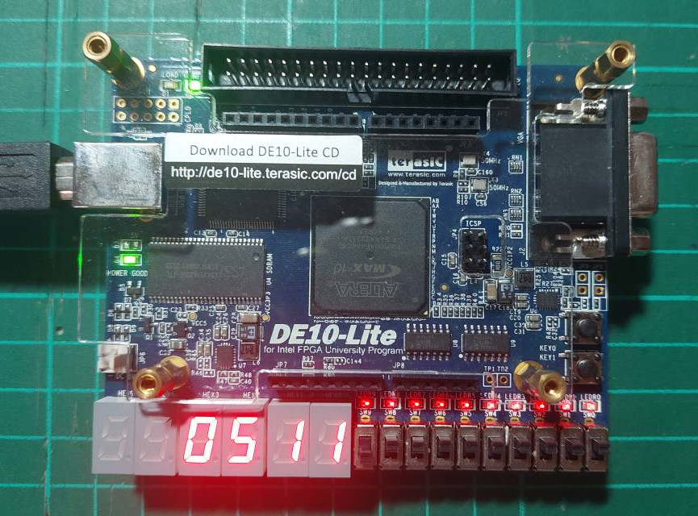
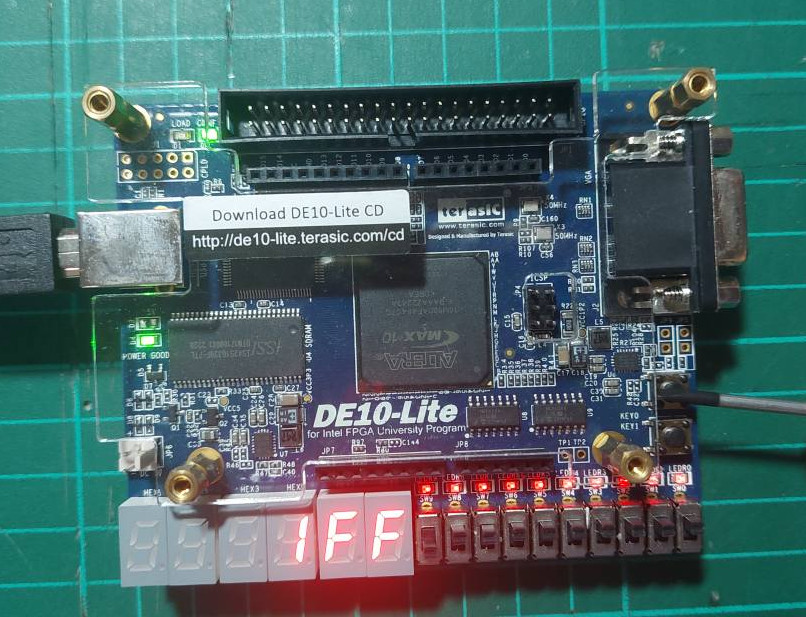

Lab Sheet 2#
This lab sheet contains the following lab activities:
- Lab 1: Combinational Logic Circuits Using Slide Switches and LEDs as I/O Devices
- Lab 2: Combinational Logic Circuits Using Push Buttons, 7-Segment Displays as I/O Devices
- Lab 3: Binary-to-Gray Code Conversion & VHDL Simulation
Lab 1: Combinational Logic Circuits Using Slide Switches and LEDs as I/O Devices#
Objective#
- Understand how combinational logic circuits can be implemented using VHDL and tested on the Intel DE10-Lite FPGA board using an array of slide switches and LEDs.
Hardware Required#
- Intel DE10-Lite FPGA board (with a USB cable)
- Computer with USB ports + Intel Quartus Prime Lite (installed)
Lab Procedure#
-
Setting up a Quartus project:
- Open the Intel Quartus Prime Lite software.
- Create a new FPGA design project for the Intel DE10-Lite FPGA board, using VHDL as the design entry method.
- Ensure that the correct FPGA device is selected during project setup.
- Ensure the name of the top-level design entity is specified correctly in the project.
- Use the provided FPGA pin assignments by importing the provided
.tclfile.
-
Analyzing VHDL code:
- Analyze the provided VHDL-2008 code listings for Labs 1.1 to 1.3, which demonstrate how to model basic combinational logic circuits such as inverting I/Os, a priority encoder, and a decoder.
- Compare the different implementations of the same design entity named
top.
-
Compiling and uploading the bitstream to the FPGA:
- Try the given code, complete the compilation process, and upload the bitstream to the target FPGA.
-
Testing the behavior using slide switches and LEDs:
- Test the uploaded FPGA design by toggling the slide switches and observing the status of the LEDs on the FPGA board.
- Describe the relationship between the positions of the slide switches and the status of the LEDs.
Lab 1.1: Inverting I/O Buffers#
The following is the VHDL code listing for the top-level design entity (named top).
LIBRARY IEEE;
USE IEEE.STD_LOGIC_1164.ALL;
-- Define the entity "top"
ENTITY top IS
GENERIC (
WIDTH : INTEGER := 10 -- Set default width of the input/output vectors
);
PORT (
SW : IN STD_LOGIC_VECTOR(WIDTH - 1 DOWNTO 0); -- Input switches
LEDS : OUT STD_LOGIC_VECTOR(WIDTH - 1 DOWNTO 0) -- Output LEDs
);
END ENTITY top;
There are three implementations of the architecture using different modeling styles:
- Behavioral implementation using a process block
- Concurrent signal assignment implementation (dataflow style)
- Loop implementation with a for-generate block
Implementation 1:
-- Dataflow architecture implementation
ARCHITECTURE dataflow OF top IS
BEGIN
-- Use a concurrent signal assignment
LEDS <= NOT SW; -- Assign switch values (inverted) to LEDs
END dataflow;
Implementation 2:
-- Behavioral architecture implementation
architecture behavioral of top is
begin
-- Process block to assign input switch values to output LEDs
process (SW)
begin
LEDS <= NOT SW; -- Assign inverted switch values to LEDs
end process;
end behavioral;
Implementation 3:
-- Generate-loop implementation
architecture dataflow of top is
begin
-- Use a for-generate block
GEN_LOOP: for i in 0 to WIDTH-1 generate
LEDS(i) <= NOT SW(i);
end generate GEN_LOOP;
end dataflow;
The following Tcl file specifies the pin assignments for the onboard slide switches and LEDs:
#============================================================
# Slide Switches
#============================================================
set_instance_assignment -name IO_STANDARD "3.3-V LVTTL" -to SW[0]
set_instance_assignment -name IO_STANDARD "3.3-V LVTTL" -to SW[1]
set_instance_assignment -name IO_STANDARD "3.3-V LVTTL" -to SW[2]
set_instance_assignment -name IO_STANDARD "3.3-V LVTTL" -to SW[3]
set_instance_assignment -name IO_STANDARD "3.3-V LVTTL" -to SW[4]
set_instance_assignment -name IO_STANDARD "3.3-V LVTTL" -to SW[5]
set_instance_assignment -name IO_STANDARD "3.3-V LVTTL" -to SW[6]
set_instance_assignment -name IO_STANDARD "3.3-V LVTTL" -to SW[7]
set_instance_assignment -name IO_STANDARD "3.3-V LVTTL" -to SW[8]
set_instance_assignment -name IO_STANDARD "3.3-V LVTTL" -to SW[9]
set_location_assignment PIN_C10 -to SW[0]
set_location_assignment PIN_C11 -to SW[1]
set_location_assignment PIN_D12 -to SW[2]
set_location_assignment PIN_C12 -to SW[3]
set_location_assignment PIN_A12 -to SW[4]
set_location_assignment PIN_B12 -to SW[5]
set_location_assignment PIN_A13 -to SW[6]
set_location_assignment PIN_A14 -to SW[7]
set_location_assignment PIN_B14 -to SW[8]
set_location_assignment PIN_F15 -to SW[9]
#============================================================
# LEDs
#============================================================
set_instance_assignment -name IO_STANDARD "3.3-V LVTTL" -to LEDS[0]
set_instance_assignment -name IO_STANDARD "3.3-V LVTTL" -to LEDS[1]
set_instance_assignment -name IO_STANDARD "3.3-V LVTTL" -to LEDS[2]
set_instance_assignment -name IO_STANDARD "3.3-V LVTTL" -to LEDS[3]
set_instance_assignment -name IO_STANDARD "3.3-V LVTTL" -to LEDS[4]
set_instance_assignment -name IO_STANDARD "3.3-V LVTTL" -to LEDS[5]
set_instance_assignment -name IO_STANDARD "3.3-V LVTTL" -to LEDS[6]
set_instance_assignment -name IO_STANDARD "3.3-V LVTTL" -to LEDS[7]
set_instance_assignment -name IO_STANDARD "3.3-V LVTTL" -to LEDS[8]
set_instance_assignment -name IO_STANDARD "3.3-V LVTTL" -to LEDS[9]
set_location_assignment PIN_A8 -to LEDS[0]
set_location_assignment PIN_A9 -to LEDS[1]
set_location_assignment PIN_A10 -to LEDS[2]
set_location_assignment PIN_B10 -to LEDS[3]
set_location_assignment PIN_D13 -to LEDS[4]
set_location_assignment PIN_C13 -to LEDS[5]
set_location_assignment PIN_E14 -to LEDS[6]
set_location_assignment PIN_D14 -to LEDS[7]
set_location_assignment PIN_A11 -to LEDS[8]
set_location_assignment PIN_B11 -to LEDS[9]
#============================================================
Post-Lab Questions for Lab 1.1#
-
Compare the different VHDL architectures implemented in Lab 1.1. After testing the design on the FPGA board, do they produce the same behavior?
-
How does changing the position of a slide switch affect the corresponding LED in the design? Explain the expected behavior.
-
What role does the
WIDTHgeneric play in the design? -
Explain the purpose of the Tcl file used in this lab. What would happen if incorrect pin assignments or I/O standards were used?
Lab 1.2: Priority Encoder#
The following is the VHDL code listing for the top-level design entity (named top).
LIBRARY IEEE;
USE IEEE.STD_LOGIC_1164.ALL;
USE IEEE.NUMERIC_STD.ALL;
-- Define the top-level design entity
ENTITY top IS
GENERIC (
WIDTH : INTEGER := 10 -- Set default width of slide switches/LEDs
);
PORT (
SW : IN STD_LOGIC_VECTOR(WIDTH - 1 DOWNTO 0); -- Input switches
LEDS : OUT STD_LOGIC_VECTOR(WIDTH - 1 DOWNTO 0) -- Output LEDs
);
END ENTITY top;
There are five implementations of the architecture using different modeling styles:
Implementation 1: Behavioral Style
ARCHITECTURE behave OF top IS
SIGNAL result : STD_LOGIC_VECTOR(3 DOWNTO 0);
BEGIN
-- A priority encoder using a process block with explicit conditions
PROCESS (SW)
BEGIN
IF SW(9) = '1' THEN
result <= "1001";
ELSIF SW(8) = '1' THEN
result <= "1000";
ELSIF SW(7) = '1' THEN
result <= "0111";
ELSIF SW(6) = '1' THEN
result <= "0110";
ELSIF SW(5) = '1' THEN
result <= "0101";
ELSIF SW(4) = '1' THEN
result <= "0100";
ELSIF SW(3) = '1' THEN
result <= "0011";
ELSIF SW(2) = '1' THEN
result <= "0010";
ELSIF SW(1) = '1' THEN
result <= "0001";
ELSE
result <= "0000"; -- or invalid
END IF;
END PROCESS;
LEDS(WIDTH-1 DOWNTO result'length) <= (OTHERS => '0');
LEDS(result'length-1 DOWNTO 0) <= result;
END behave;
Implementation 2: Dataflow Style
ARCHITECTURE dataflow OF top IS
CONSTANT NUM_BITS : INTEGER := 4;
SIGNAL result : INTEGER;
BEGIN
-- Priority encoder using selected signal assignment
result <= 9 WHEN SW(9) = '1' ELSE
8 WHEN SW(8) = '1' ELSE
7 WHEN SW(7) = '1' ELSE
6 WHEN SW(6) = '1' ELSE
5 WHEN SW(5) = '1' ELSE
4 WHEN SW(4) = '1' ELSE
3 WHEN SW(3) = '1' ELSE
2 WHEN SW(2) = '1' ELSE
1 WHEN SW(1) = '1' ELSE
0;
-- Use a concurrent signal assignment to assign values to LEDs
LEDS(WIDTH-1 DOWNTO NUM_BITS) <= (OTHERS => '0');
LEDS(NUM_BITS-1 DOWNTO 0) <= STD_LOGIC_VECTOR(TO_UNSIGNED(result, NUM_BITS));
END dataflow;
Implementation 3: Behavioral (Process Block with For-Loop)
behave OF top IS
SIGNAL result : STD_LOGIC_VECTOR(3 DOWNTO 0);
BEGIN
-- Implement a priority encoder in a process block
PROCESS (SW)
BEGIN
result <= (OTHERS => '0'); -- default values that can be overwritten
FOR i IN 0 TO WIDTH - 1 LOOP
IF SW(i) = '1' THEN
result <= STD_LOGIC_VECTOR(TO_UNSIGNED(i, result'length));
END IF;
END LOOP;
END PROCESS;
-- Use a concurrent signal assignment to assign values to LEDs
LEDS(WIDTH-1 DOWNTO result'length) <= (OTHERS => '0');
LEDS(result'length-1 DOWNTO 0) <= result;
END behave;
Implementation 4: Behavioral (Process Block with Exit)
ARCHITECTURE behave OF top IS
CONSTANT NUM_BITS : INTEGER := 4;
BEGIN
PROCESS (SW)
VARIABLE result : INTEGER;
BEGIN
result := 0;
FOR i IN WIDTH - 1 DOWNTO 0 LOOP
IF SW(i) = '1' THEN
result := i;
EXIT; -- exit on highest-priority bit
END IF;
END LOOP;
-- Assign values to the lower NUM_BITS of LEDs.
LEDS(NUM_BITS-1 DOWNTO 0) <= STD_LOGIC_VECTOR(TO_UNSIGNED(result, NUM_BITS));
END PROCESS;
-- Use a concurrent signal assignment to assign values to the rest of LEDs
LEDS(WIDTH-1 DOWNTO NUM_BITS) <= (OTHERS => '0');
END behave;
Implementation 5: Dataflow
ARCHITECTURE dataflow OF top IS
BEGIN
-- Use a generate block
GEN_LEDS : FOR i IN 0 TO WIDTH-1 GENERATE
BEGIN
-- concurrent assignment
LEDS(i) <= '1' WHEN unsigned(SW(WIDTH-1 DOWNTO i)) /= 0 ELSE '0';
END GENERATE GEN_LEDS;
END dataflow;
Post-Lab Questions for Lab 1.2#
-
Compare the different VHDL architectures implemented in Lab 1.2. After testing the design on the FPGA board, do they produce the same behavior? Explain why or why not.
-
Write the truth table for the priority encoder based on the VHDL implementations in this lab, showing the relationship between the input switch positions and the corresponding LED output values.
-
Draw the digital logic circuit corresponding to a priority encoder (with 10-bit inputs and 4-bit outputs) based on the behavior described.
-
Which previously tested implementation matches the following VHDL code?
ARCHITECTURE behave OF top IS
BEGIN
-- A cumulative LED enabler
PROCESS (SW)
BEGIN
LEDS <= (OTHERS => '0'); -- default all off
FOR i IN WIDTH - 1 DOWNTO 0 LOOP
IF SW(i) = '1' THEN
LEDS(i DOWNTO 0) <= (OTHERS => '1');
END IF;
END LOOP;
END PROCESS;
END behave;
Lab 1.3: 4b-to-10b Decoder#
The following is the VHDL code listing for the top-level design entity (named top).
LIBRARY IEEE;
USE IEEE.STD_LOGIC_1164.ALL;
USE IEEE.NUMERIC_STD.ALL;
-- Define the top-level design entity
ENTITY top IS
GENERIC (
WIDTH : INTEGER := 10 -- Set default width of slide switches/LEDs
);
PORT (
SW : IN STD_LOGIC_VECTOR(WIDTH-1 DOWNTO 0); -- Input switches
LEDS : OUT STD_LOGIC_VECTOR(WIDTH-1 DOWNTO 0) -- Output LEDs
);
END ENTITY top;
Implementation 1: Behavioral with CASE-WHEN Statement
ARCHITECTURE behave OF top IS
SIGNAL result : STD_LOGIC_VECTOR(WIDTH-1 DOWNTO 0);
BEGIN
-- Implement a 4b-to-10b decoder
PROCESS (SW)
BEGIN
result <= (OTHERS => '0');
CASE SW(3 DOWNTO 0) IS
WHEN "0000" => result(0) <= '1';
WHEN "0001" => result(1) <= '1';
WHEN "0010" => result(2) <= '1';
WHEN "0011" => result(3) <= '1';
WHEN "0100" => result(4) <= '1';
WHEN "0101" => result(5) <= '1';
WHEN "0110" => result(6) <= '1';
WHEN "0111" => result(7) <= '1';
WHEN "1000" => result(8) <= '1';
WHEN "1001" => result(9) <= '1';
WHEN OTHERS => result <= (OTHERS => '0');
END CASE;
END PROCESS;
LEDS <= result;
END behave;
Implementation 2: Dataflow with WITH-SELECT
ARCHITECTURE dataflow OF top IS
BEGIN
-- Implement a 4b-to-10b decoder
WITH SW(3 DOWNTO 0) SELECT
LEDS <= "0000000001" WHEN "0000",
"0000000010" WHEN "0001",
"0000000100" WHEN "0010",
"0000001000" WHEN "0011",
"0000010000" WHEN "0100",
"0000100000" WHEN "0101",
"0001000000" WHEN "0110",
"0010000000" WHEN "0111",
"0100000000" WHEN "1000",
"1000000000" WHEN "1001",
(OTHERS => '0') WHEN OTHERS;
END dataflow;
Implementation 3: Behavioral with Indexing
ARCHITECTURE behave OF top IS
BEGIN
-- Implement a 4b-to-10b decoder
PROCESS (SW)
BEGIN
LEDS <= (OTHERS => '0'); -- Clear all outputs first
LEDS(TO_INTEGER(UNSIGNED(SW(3 DOWNTO 0)))) <= '1';
END PROCESS;
END behave;
Post-Lab Questions for Lab 1.3#
-
Compare the different VHDL architectures implemented in Lab 1.3. After testing the design with the FPGA board, do they produce the same behavior?
-
Write the truth table for the decoder (with 4-bit inputs and 10-bit outputs) based on the VHDL implementations in this lab, showing the relationship between the input switch positions and the corresponding LED output values.
-
Complete the following VHDL code that implements a decoder using the
sll(shift-left-logical) operator:
ARCHITECTURE dataflow OF top IS
SIGNAL PATTERN : UNSIGNED(WIDTH-1 DOWNTO 0) := TO_UNSIGNED(1, WIDTH);
BEGIN
LEDS <= STD_LOGIC_VECTOR(PATTERN SLL ___________________________________ );
END dataflow;
Lab 2: Combinational Logic Circuits Using Push Buttons and 7-Segment Displays as I/O Devices#
Objective#
- Understand how combinational logic circuits can be implemented using VHDL and tested on the Intel DE10-Lite FPGA board using push buttons and 7-segment displays.
Lab Procedure#
-
Setting up a Quartus project:
- Open the Intel Quartus Prime Lite software.
- Create a new FPGA design project for the Intel DE10-Lite FPGA board, using VHDL as the design entry method.
- Ensure that the correct FPGA device is selected during project setup.
- Ensure the name of the top-level design entity is specified correctly in the project.
- Use the provided FPGA pin assignments by importing the supplied
.tclfile.
-
Analyzing VHDL demo code:
- Analyze the provided VHDL-2008 code listings.
- Compare the different implementations of the same design entity named
top.
-
Compiling and uploading the bitstream to the FPGA:
- Try the given demo code, complete the compilation process, and upload the bitstream to the target FPGA.
- Test the uploaded FPGA design.
-
VHDL Coding Challenge: Write VHDL code that performs the following tasks:
- Reads the 10-bit binary input from the slide switches.
- Displays the corresponding 3-digit hexadecimal value on the 7-segment display module when
KEY[0]is pressed. - Displays the corresponding 4-digit decimal value on the 7-segment display module when
KEY[1]is pressed. - Otherwise, turn off all digits of the 7-segment display.
-
Test the design on the FPGA board and take clear photos of the hardware setup and output display. Include these photos in your lab report.
-
Rewrite the VHDL design to modularize the functionality as follows:
- Implement a VHDL entity (named
bcd7seg) for the BCD-to-7-segment decoder, which converts a 4-bit BCD digit into the corresponding 7-segment display pattern. - Implement a 10-bit binary to 4-digit BCD decoder (named
bin2bcd), which converts a 10-bit binary number (0–1023) into four BCD digits (thousands, hundreds, tens, and units). - Instantiate both modules and use them in the top-level VHDL design (written in structural style).
- Complete the compilation process and upload the bitstream to test the design on the FPGA development board to verify correct functionality.
- Implement a VHDL entity (named
-
Open the RTL Viewer of the Quartus Prime Lite and capture a screenshot of the generated circuit schematic. Include this schematic in the lab report.
The following is the VHDL code listing for the top-level design entity (named top).
LIBRARY IEEE;
USE IEEE.STD_LOGIC_1164.ALL;
USE IEEE.NUMERIC_STD.ALL;
-- Define the entity "top"
ENTITY top IS
PORT (
KEY : IN STD_LOGIC_VECTOR(1 DOWNTO 0);
HEX0 : OUT STD_LOGIC_VECTOR(7 DOWNTO 0);
HEX1 : OUT STD_LOGIC_VECTOR(7 DOWNTO 0);
HEX2 : OUT STD_LOGIC_VECTOR(7 DOWNTO 0);
HEX3 : OUT STD_LOGIC_VECTOR(7 DOWNTO 0);
HEX4 : OUT STD_LOGIC_VECTOR(7 DOWNTO 0);
HEX5 : OUT STD_LOGIC_VECTOR(7 DOWNTO 0);
HEX6 : OUT STD_LOGIC_VECTOR(7 DOWNTO 0)
);
END ENTITY top;
Demo 1
Press any KEY button to turn on all 7-segment displays and decimal point (dot).
ARCHITECTURE behave OF top IS
BEGIN
PROCESS (KEY)
BEGIN
IF KEY /= "11" THEN -- (any key button is held pressed)
HEX0 <= (OTHERS => '0');
HEX1 <= (OTHERS => '0');
HEX2 <= (OTHERS => '0');
HEX3 <= (OTHERS => '0');
HEX4 <= (OTHERS => '0');
HEX5 <= (OTHERS => '0');
ELSE -- Turn off all 7-segments and dots
HEX0 <= (OTHERS => '1');
HEX1 <= (OTHERS => '1');
HEX2 <= (OTHERS => '1');
HEX3 <= (OTHERS => '1');
HEX4 <= (OTHERS => '1');
HEX5 <= (OTHERS => '1');
END IF;
END PROCESS;
END behave;
Demo 2
Press any KEY button to display 12345
on the 6-digit 7-segment display module; otherwise, all segments remain off.
ARCHITECTURE behave OF top IS
-- Function to decode a 4-bit BCD digit to a 7-segment pattern
FUNCTION DEC7SEG(d : INTEGER RANGE 0 TO 15) RETURN STD_LOGIC_VECTOR IS
BEGIN
CASE d IS
WHEN 0 => RETURN "11000000"; -- 0
WHEN 1 => RETURN "11111001"; -- 1
WHEN 2 => RETURN "10100100"; -- 2
WHEN 3 => RETURN "10110000"; -- 3
WHEN 4 => RETURN "10011001"; -- 4
WHEN 5 => RETURN "10010010"; -- 5
WHEN 6 => RETURN "10000010"; -- 6
WHEN 7 => RETURN "11111000"; -- 7
WHEN 8 => RETURN "10000000"; -- 8
WHEN 9 => RETURN "10010000"; -- 9
WHEN 10 => RETURN "10001000"; -- A
WHEN 11 => RETURN "10000011"; -- b
WHEN 12 => RETURN "11000110"; -- C
WHEN 13 => RETURN "10100001"; -- d
WHEN 14 => RETURN "10000110"; -- E
WHEN 15 => RETURN "10001110"; -- F
WHEN OTHERS => RETURN "11111111"; -- blank/off
END CASE;
END FUNCTION;
BEGIN
PROCESS (KEY)
BEGIN
IF KEY /= "11" THEN -- any key button is held pressed
HEX0 <= DEC7SEG(6);
HEX1 <= DEC7SEG(5);
HEX2 <= DEC7SEG(4);
HEX3 <= DEC7SEG(3);
HEX4 <= DEC7SEG(2);
HEX5 <= DEC7SEG(1);
ELSE
HEX0 <= (OTHERS => '1');
HEX1 <= (OTHERS => '1');
HEX2 <= (OTHERS => '1');
HEX3 <= (OTHERS => '1');
HEX4 <= (OTHERS => '1');
HEX5 <= (OTHERS => '1');
END IF;
END PROCESS;
END behave;
The following Tcl file specifies the pin assignments for the two active-low push buttons and the 6-digit 7-segment display module on the FPGA board.
#============================================================
# SEG7
#============================================================
set_instance_assignment -name IO_STANDARD "3.3-V LVTTL" -to HEX0[0]
set_instance_assignment -name IO_STANDARD "3.3-V LVTTL" -to HEX0[1]
set_instance_assignment -name IO_STANDARD "3.3-V LVTTL" -to HEX0[2]
set_instance_assignment -name IO_STANDARD "3.3-V LVTTL" -to HEX0[3]
set_instance_assignment -name IO_STANDARD "3.3-V LVTTL" -to HEX0[4]
set_instance_assignment -name IO_STANDARD "3.3-V LVTTL" -to HEX0[5]
set_instance_assignment -name IO_STANDARD "3.3-V LVTTL" -to HEX0[6]
set_instance_assignment -name IO_STANDARD "3.3-V LVTTL" -to HEX0[7]
set_instance_assignment -name IO_STANDARD "3.3-V LVTTL" -to HEX1[0]
set_instance_assignment -name IO_STANDARD "3.3-V LVTTL" -to HEX1[1]
set_instance_assignment -name IO_STANDARD "3.3-V LVTTL" -to HEX1[2]
set_instance_assignment -name IO_STANDARD "3.3-V LVTTL" -to HEX1[3]
set_instance_assignment -name IO_STANDARD "3.3-V LVTTL" -to HEX1[4]
set_instance_assignment -name IO_STANDARD "3.3-V LVTTL" -to HEX1[5]
set_instance_assignment -name IO_STANDARD "3.3-V LVTTL" -to HEX1[6]
set_instance_assignment -name IO_STANDARD "3.3-V LVTTL" -to HEX1[7]
set_instance_assignment -name IO_STANDARD "3.3-V LVTTL" -to HEX2[0]
set_instance_assignment -name IO_STANDARD "3.3-V LVTTL" -to HEX2[1]
set_instance_assignment -name IO_STANDARD "3.3-V LVTTL" -to HEX2[2]
set_instance_assignment -name IO_STANDARD "3.3-V LVTTL" -to HEX2[3]
set_instance_assignment -name IO_STANDARD "3.3-V LVTTL" -to HEX2[4]
set_instance_assignment -name IO_STANDARD "3.3-V LVTTL" -to HEX2[5]
set_instance_assignment -name IO_STANDARD "3.3-V LVTTL" -to HEX2[6]
set_instance_assignment -name IO_STANDARD "3.3-V LVTTL" -to HEX2[7]
set_instance_assignment -name IO_STANDARD "3.3-V LVTTL" -to HEX3[0]
set_instance_assignment -name IO_STANDARD "3.3-V LVTTL" -to HEX3[1]
set_instance_assignment -name IO_STANDARD "3.3-V LVTTL" -to HEX3[2]
set_instance_assignment -name IO_STANDARD "3.3-V LVTTL" -to HEX3[3]
set_instance_assignment -name IO_STANDARD "3.3-V LVTTL" -to HEX3[4]
set_instance_assignment -name IO_STANDARD "3.3-V LVTTL" -to HEX3[5]
set_instance_assignment -name IO_STANDARD "3.3-V LVTTL" -to HEX3[6]
set_instance_assignment -name IO_STANDARD "3.3-V LVTTL" -to HEX3[7]
set_instance_assignment -name IO_STANDARD "3.3-V LVTTL" -to HEX4[0]
set_instance_assignment -name IO_STANDARD "3.3-V LVTTL" -to HEX4[1]
set_instance_assignment -name IO_STANDARD "3.3-V LVTTL" -to HEX4[2]
set_instance_assignment -name IO_STANDARD "3.3-V LVTTL" -to HEX4[3]
set_instance_assignment -name IO_STANDARD "3.3-V LVTTL" -to HEX4[4]
set_instance_assignment -name IO_STANDARD "3.3-V LVTTL" -to HEX4[5]
set_instance_assignment -name IO_STANDARD "3.3-V LVTTL" -to HEX4[6]
set_instance_assignment -name IO_STANDARD "3.3-V LVTTL" -to HEX4[7]
set_instance_assignment -name IO_STANDARD "3.3-V LVTTL" -to HEX5[0]
set_instance_assignment -name IO_STANDARD "3.3-V LVTTL" -to HEX5[1]
set_instance_assignment -name IO_STANDARD "3.3-V LVTTL" -to HEX5[2]
set_instance_assignment -name IO_STANDARD "3.3-V LVTTL" -to HEX5[3]
set_instance_assignment -name IO_STANDARD "3.3-V LVTTL" -to HEX5[4]
set_instance_assignment -name IO_STANDARD "3.3-V LVTTL" -to HEX5[5]
set_instance_assignment -name IO_STANDARD "3.3-V LVTTL" -to HEX5[6]
set_instance_assignment -name IO_STANDARD "3.3-V LVTTL" -to HEX5[7]
set_location_assignment PIN_C14 -to HEX0[0]
set_location_assignment PIN_E15 -to HEX0[1]
set_location_assignment PIN_C15 -to HEX0[2]
set_location_assignment PIN_C16 -to HEX0[3]
set_location_assignment PIN_E16 -to HEX0[4]
set_location_assignment PIN_D17 -to HEX0[5]
set_location_assignment PIN_C17 -to HEX0[6]
set_location_assignment PIN_D15 -to HEX0[7]
set_location_assignment PIN_C18 -to HEX1[0]
set_location_assignment PIN_D18 -to HEX1[1]
set_location_assignment PIN_E18 -to HEX1[2]
set_location_assignment PIN_B16 -to HEX1[3]
set_location_assignment PIN_A17 -to HEX1[4]
set_location_assignment PIN_A18 -to HEX1[5]
set_location_assignment PIN_B17 -to HEX1[6]
set_location_assignment PIN_A16 -to HEX1[7]
set_location_assignment PIN_B20 -to HEX2[0]
set_location_assignment PIN_A20 -to HEX2[1]
set_location_assignment PIN_B19 -to HEX2[2]
set_location_assignment PIN_A21 -to HEX2[3]
set_location_assignment PIN_B21 -to HEX2[4]
set_location_assignment PIN_C22 -to HEX2[5]
set_location_assignment PIN_B22 -to HEX2[6]
set_location_assignment PIN_A19 -to HEX2[7]
set_location_assignment PIN_F21 -to HEX3[0]
set_location_assignment PIN_E22 -to HEX3[1]
set_location_assignment PIN_E21 -to HEX3[2]
set_location_assignment PIN_C19 -to HEX3[3]
set_location_assignment PIN_C20 -to HEX3[4]
set_location_assignment PIN_D19 -to HEX3[5]
set_location_assignment PIN_E17 -to HEX3[6]
set_location_assignment PIN_D22 -to HEX3[7]
set_location_assignment PIN_F18 -to HEX4[0]
set_location_assignment PIN_E20 -to HEX4[1]
set_location_assignment PIN_E19 -to HEX4[2]
set_location_assignment PIN_J18 -to HEX4[3]
set_location_assignment PIN_H19 -to HEX4[4]
set_location_assignment PIN_F19 -to HEX4[5]
set_location_assignment PIN_F20 -to HEX4[6]
set_location_assignment PIN_F17 -to HEX4[7]
set_location_assignment PIN_J20 -to HEX5[0]
set_location_assignment PIN_K20 -to HEX5[1]
set_location_assignment PIN_L18 -to HEX5[2]
set_location_assignment PIN_N18 -to HEX5[3]
set_location_assignment PIN_M20 -to HEX5[4]
set_location_assignment PIN_N19 -to HEX5[5]
set_location_assignment PIN_N20 -to HEX5[6]
set_location_assignment PIN_L19 -to HEX5[7]
#============================================================
# KEY
#============================================================
set_instance_assignment -name IO_STANDARD "3.3 V SCHMITT TRIGGER" -to KEY[0]
set_instance_assignment -name IO_STANDARD "3.3 V SCHMITT TRIGGER" -to KEY[1]
set_location_assignment PIN_B8 -to KEY[0]
set_location_assignment PIN_A7 -to KEY[1]
#============================================================
Note
- This Tcl script sets the input I/O standard to 3.3V with a Schmitt Trigger input buffer for the push buttons (
KEY). - Schmitt Triggers are useful for debouncing noisy or slow-changing signals like push buttons.


Figure: Setting of the slide switches corresponding to
0511 (dec) and 1FF (hex)
Lab 3: Binary-to-Gray Code Conversion & VHDL Simulation#
Objective#
- Learn how to model an n-bit binary-to-gray code convert in VHDL.
- Learn how to write VHDL testbench and use a simulator to verify the design.
Binary-to-Gray Code Converter#
N-bit binary-to-gray code conversion can be expressed by the following Boolean equations:
The following table shows 4-bit binary code and gray code:
b₃b₂b₁b₀|g₃g₂g₁g₀
0000 | 0000
0001 | 0001
0010 | 0011
0011 | 0010
0100 | 0110
0101 | 0111
0110 | 0101
0111 | 0100
Lab Procedure:#
-
Write synthesizable VHDL code that implements an N-bit binary-to-gray code converter.
- Use
Nas a generic for a positive integer value (default: 8) SW(N-1 downto 0)is the input signal representing the N-bit binary code.LEDS(N-1 downto 0)is the output signal representing the corresponding N-bit Gray code.
- Use
-
Write a VHDL testbench to verify the VHDL code and simulate the testbench using a VHDL simulator.
- Capture the waveforms of the design’s I/O signals generated during VHDL simulation.
-
Test the design using the DE10-Lite FPGA board with
N= 10.- Take photos of the FPGA board for the following test cases:
SW = "0000011011"SW = "0101011011"
- Take photos of the FPGA board for the following test cases:
This work is licensed under a Creative Commons Attribution-ShareAlike 4.0 International License.
Created: 2025-05-27 | Last Updated: 2025-05-30